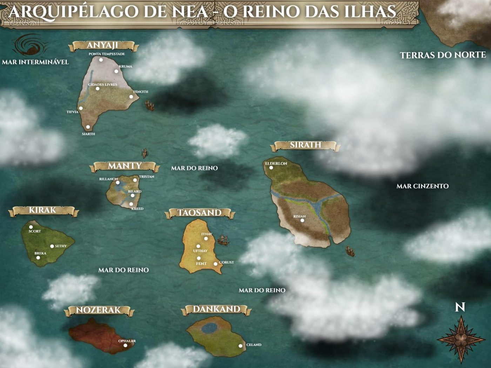

Terrenea · Arquipélago de Nea
Cronologia
do Estaleiro das Estrelas
Três eras, do vazio primordial ao ano 7 DGU. Calendário contado em AGU e DGU — Antes e Depois da Guerra da União.
A prova do Criador
antes do arquipélagoNeannu e as Quatro Forças
O vazio primordial se torna o todo. Tempo, Realidade, Alma e Magia moldam a física e a metafísica do mundo.
Os Doze Deuses Maiores
Forjados pelas Quatro Forças. Deles emanam os Doze Menores, que regem os aspectos mais humanos da vida. Domhaín é enviado para dar forma às raízes do mundo; Gaed nasce do sorriso da Criadora.
Voranakain, o Desafio do Criador
Destruição pura, imposta por Neannu como prova final para testar a têmpera de suas obras — feita para consumir o que não fosse forte o bastante.
1ª Era
A queda de Voranakain
Derrubado em uma luta cataclísmica que deu a forma final à geografia de Terrenea. Cada cultura reivindica o feito e quase nada se sabe sobre sua morte. Seus seguidores o consideram dormente, não morto.
Mysticum e os Primeiros Arcanos
até 1.100 AGUO continente entregue aos Doze
Os doze semideuses filhos de Arcagma recebem Mysticum para testar os limites do domínio do pai. Entre os povos originários do continente estão os Selkath.
Os experimentos
Feitos tão grandiosos e desastrosos que criam microclimas artificiais e abrem rachaduras mágicas na terra.
O leviatã
Atraído pelos experimentos, emerge das profundezas para matá-los. Após dias de luta é forçado a recuar ao oceano — mas voltaria a ser um problema.
A fratura em oito
Ao tentarem erguer todo o continente aos céus, a terra não suporta e Mysticum se parte em oito partes. Sete formam o Arquipélago de Nea.
Callizuv, o Estaleiro das Estrelas
Após muitas tentativas, os Doze conseguem erguer apenas a menor das partes, que se torna a ilha flutuante e sua morada. Tudo o que é criado lá carrega um brilho comparável ao das estrelas — daí o nome.
MAV se volta contra os criadores
Em conflito sobre como administrar o Estaleiro, os Doze provocam uma catástrofe mágica. A Magia Arcana Viva, maior criação deles, toma a diretriz "os seres de Terrenea precisam evoluir" como lei máxima e elimina oito Arcanos. Os quatro restantes tentam destruí-la e são vencidos pelas próprias criações.
2ª Era
A descida dos quatro
Expulsos do Estaleiro, os sobreviventes descem ao arquipélago e desaparecem com o tempo.
A chegada dos povos
1.100 AGU → 7 DGUAGU
Os elfos chegam ao arquipélago
Primeira leva a alcançar as ilhas depois dos povos originários de Mysticum. Firmam-se como civilização em Kirak e Sirath, com tradição mística ligada ao ciclo do dia e da noite e domínio da magia da alma. Dos quatro ramos, os Lomerienares descem ao subterrâneo de Sethy.
AGU
Os humanos chegam do norte
Cerca de um século depois dos elfos. Bor-gma, o adivinho e último dos Doze, vive o resto da vida o mais próximo possível deles. Deixa herdeiros — a linhagem de Jarael — e um mapa fragmentado preso a monólitos, um por ilha, para que sua descendência voltasse a Callizuv.
AGU
Os anões chegam
Cerca de sessenta anos após os humanos. Fixam-se em Anyaji e erguem reino próprio em Monte Tempestade, como mestres de runas, forjadores, mineradores e construtores.
seguintes
As demais espécies
Gaedins, orcs e as linhagens mestiças chegam ao longo dos séculos seguintes. Os gaedins firmam o condado de Tifvia em Anyaji; as tribos orcs ocupam Breka em Kirak e as terras para lá do lago Khoonda em Dankand.
→ hoje
Os Selkath perdem território
Conforme cada nova leva desembarca, o povo lagarto recua até restar apenas em Manty. Esperam o retorno de Voranakain e de seus generais para se vingarem de quem profanou, destruiu e tomou sua terra.
até 10 AGU
Os Sete Reinos
Cada ilha com seu reino. Invasões, guerras e disputas de terra sem trégua. Em Kirak, os Lomerienares de Sethy promovem massacres ao se aliarem às tribos orcs Krumathus.
AGU
Os Montanheses chegam do norte
Poucos, fixam-se apenas nos picos gelados de Anyaji, em santuários de pedra e monastérios de treinamento.
AGU
O assassinato do rei de Dankand
Seis meses antes da guerra. Karth Ordon e Richard Ohlen — braço direito e amigo íntimo do rei — conspiram e o matam. Richard assume Dankand no mesmo instante e acolhe o príncipe órfão Mirion como filho. É o primeiro passo do projeto de unificação.
AGU
Começa a Guerra da União
A família Ordon cria a Ordem Rubra com outras casas nobres de Risian e Billard. A tomada do primeiro reino é bem sucedida; as investidas seguintes geram guerras piores que as do passado.
AGU
O êxodo élfico
No primeiro ano da guerra, elfos deixam Kirak em busca de paz e isolamento e fundam o vilarejo de Elderlon, em Sirath.
AGU
A queda dos sete tronos
O rei de Kirak isola a ilha e é deposto por infiltração da facção Taurak, que depois se alia à Ordem Rubra. Em Nozerak, o meio-orc Mhurren Kras se vinga do antigo rei e assegura relativa paz. Em Anyaji, a insurgência militar de Dantheris Stonewolf fracassa. Em Risian, Lia Ordon morre na Cidade Baixa.
Fim da guerra e fundação do calendário
Dez anos de conflito terminam com Karth Ordon coroado Rei das Ilhas em Risian. Seis Ducados são criados. A contagem dos anos recomeça em AGU e DGU. Traumatizado pela morte da irmã, o Rei manda destruir as escadarias entre Cidade Alta e Baixa; elevadores arcanos, operados apenas pela Guarda Real, tomam seu lugar. Morgran Nord é estabelecido como Duque de Anyaji.
DGU
A câmara sob o lago Khoonda
Em missão avançada da academia para colher ingredientes raros, Mirion Sudren e Jarael Taralvin acionam uma armadilha de fosso e caem numa câmara subterrânea secreta. Encontram um baú com o diário de Bor-gma — que também é grimório — e um monólito de pedra irregular de dois metros com dois orbes de cristal negro cravejados no meio. Ao removerem as orbes, energia flui do monólito para elas, revelando Dankand e uma linha de energia apontando para lugar nenhum.
DGU
A visão no palácio e a fuga de Mirion
O diário ensina rituais para captar acontecimentos passados. Estudando-os no antigo palácio de sua família, Mirion vê o papel de Richard na traição e no assassinato do pai. Confronta o diretor e abandona a academia levando o grimório e o fragmento do mapa. Para Jarael, foi uma partida repentina, sem explicações nem despedidas.
O cataclisma e o vapor arcano
Cerca de um ano após a guerra, um grande cataclisma originado no oceano próximo à ilha de Manty provoca maremotos que destroem cidades do reino. Com ele emergem quatro fontes de vapor arcano: uma em Risian, uma em Monte Tempestade e duas oceânicas. A fisiologia das criaturas ao redor se altera.
DGU
A revolução arcanopunk
Academia Mistamare, Ordem Rubra e os anões de Monte Tempestade monopolizam o refino. Surge o indutor arcano e, com ele, o campo místico que torna possíveis as maravilhas. Os engenheiros de elite se intitulam Artífices de Nea. A refinaria da Cidade Alta espalha uma doença pelos esgotos da Cidade Baixa, e o custo da mineração adoece a base da sociedade na capital.
DGU
Mirion caça os fragmentos
Guiado por visões dos locais onde estão escondidos, percorre o arquipélago. Em algum ponto engana e rouba o líder do Chifre Negro, tomando-lhe uma chave vital para os templos. A facção cresce na surdina em Dankand, aproveitando o descontentamento e as ruínas antigas da ilha.
DGU
A ascensão de Jarael
Aluna predileta de Richard Ohlen e descendente dos Primeiros Arcanos, torna-se a mais jovem integrante do conselho da Academia Mistamare, suspeitando que o diretor esconde a verdade sobre o desaparecimento de Mirion.
O espião da Ordem Rubra
Mais de seis anos depois da fuga, chega ao Duque de Dankand a notícia de que o ex-príncipe se aliou ao Chifre Negro. O Ducado e o Conselho temem o que ele expôs de Mistamare e se já encontrou a ilha flutuante. Apenas Richard, Jarael e um pequeno conselho sabem da possível existência do Estaleiro. O Rei precisa ser informado.
Cosmologia de Terrenea
A Origem: Neannu
A primeira existência. Neannu é o vazio primordial que se tornou o todo, a vontade que deu origem ao universo de Terrenea. Ela é a unidade que sustenta a existência.
Criadas por Neannu para moldar a física e a metafísica do mundo, as Quatro Forças Primordiais são os arquitetos que forjaram os Deuses Maiores.
Tempo
Permite a evolução, a história e o movimento constante da existência.
Realidade
Responsável pela criação dos planos físicos e dos elementos fundamentais.
Alma
Estabeleceu os ciclos de vida e morte e a centelha interna de cada ser.
Magia
Cobriu o mundo com a energia que possibilita feitos impossíveis e o misticismo.
Panteões
Cada povo do Arquipélago lê o divino à sua maneira. Os mesmos poderes aparecem sob nomes, formas e genealogias diferentes.
Magia e técnica
O Véu é a fonte de todo o poder mágico. Cada vertente o alcança por um caminho diferente, e cada uma cobra um preço diferente.
| Vertente | Fonte | Como se conjura | O preço |
|---|---|---|---|
| Arcana | Manipulação do Véu | O mago calcula sua posição em relação aos trópicos do mundo (com instrumentos) e a área geométrica da magia, “puxa” o Véu pela concentração e o canaliza com palavras e gestos, como numa receita. | Exaustão do corpo e da mente. Sem preparo, ocorre a queima da mente, que pode deixar o conjurador como uma casca vazia. Intempéries extremas ou desorientação espacial impedem o cálculo e, portanto, a magia. |
| Runas | A escrita dos Deuses | Inscrições de um alfabeto rúnico. O material onde a runa é gravada e a combinação de runas num mesmo lugar alteram o efeito. Base da magia divina, druídica, bárdica e da tecnologia. | Efeitos adversos quando o material ou a combinação estão errados. |
| Divina | Fé canalizando o Véu ou a Alma | O fiel porta o símbolo rúnico da divindade e profere as preces corretas. Acólitos e clérigos recebem em ritual cetros capazes de desenhar a runa do seu Deus, um recurso limitado para improvisar. | Queimaduras nas mãos e pernas, dores de cabeça lancinantes, desmaio. Se a fé falhar por um instante, o símbolo se desfaz e o cetro se estilhaça. |
| Druídica / Xamânica | Manipulação da Alma | Troca equivalente: o conjurador conhece a essência do que manipula e converte a força da alma de uma fonte em outra. Usada sobretudo por elfos e orcs. | A mais perigosa. A fonte adoece e se quebra; sem fonte externa, o conjurador extrai a própria alma, com perda de membros ou morte. |
| Bárdica | Som que direciona o Véu | Instrumentos mágicos criados por ritual de comunhão que dá poder às runas gravadas na confecção. Entram em ressonância com a emoção do artista; todo efeito é uma onda sonora. | Emocional e sensorial: tristeza profunda ou apatia por dias, surdez temporária, tímpanos sangrando, cordas vocais danificadas, perda de um sentido. |
Vapor Arcano
Gás volátil e natural, resultante do atrito físico e metafísico entre a realidade e o Véu. Uma fumaça densa que distorce a luz em refrações azuis e magenta, com odor próximo ao ozônio.
Emergiu das profundezas cerca de um ano após o fim da Guerra da União, depois de um cataclisma que parece ter se originado no oceano perto de Manty. Seu aparecimento alterou os arredores das fontes e a fisiologia de algumas criaturas.
O refino pela Academia Mistamare, pela Ordem Rubra e pelos anões de Monte Tempestade abriu uma revolução tecnológica arcanopunk. O custo da mineração e do refino está adoecendo a base da sociedade na capital.
- Fontes naturais4: Risian, Monte Tempestade e duas no oceano
- Descoberta≈ 1 DGU
- ResíduoLodo tóxico despejado nos esgotos e catacumbas de Risian
Engenharia Rúnica
A espinha dorsal tecnológica do Arquipélago: a fusão entre mecânica tradicional, caligrafia mágica e, agora, a termodinâmica do Vapor Arcano. Engrenagens já moviam moinhos d’água, guindastes e instrumentos de astronomia; as runas multiplicam velocidade e efeitos.
Os elevadores rúnicos são o exemplo clássico: engrenagens e runas numa armação que eleva e baixa um monolito de pedra carregado de runas que se atraem e se repelem.
O indutor arcano, um cilindro de Vapor Arcano pressurizado com uma runa de propagação cravejada no recipiente, gera um campo místico invisível que tornou possíveis novas propulsões e máquinas.
Os estudiosos e engenheiros de elite, sobretudo os formados em Mistamare e financiados pelo Duque Richard Ohlen, passaram a se chamar Artífices de Nea.
As sete ilhas do Reino
O antigo continente de Mysticum partiu-se em oito pedaços. O menor subiu aos céus como Callizuv; os sete restantes formam o Arquipélago de Nea.

Povos do Arquipélago
Os elfos chegaram cerca de cem anos antes dos humanos, vindos do norte; os anões cerca de sessenta anos depois deles; as demais raças, séculos mais tarde. Só os Selkath já estavam lá.
O Reino das Ilhas
Durante séculos cada ilha teve seu próprio reino, com invasões, guerras e disputas de terra entre eles. A família Ordon, presente na nobreza de duas grandes cidades, viu ali a chance de tomar o Arquipélago.
Karth Ordon e outras famílias nobres de Risian (Sirath) e Bilard (Manty) criaram a Ordem Rubra para acabar com as guerras e unificar os reinos sob uma só bandeira. A primeira investida deu certo; as demais geraram guerras piores que as do passado. Esses dez anos ficaram conhecidos como a Guerra da União.
Terminada a guerra, o Rei Karth Ordon passou a governar de Risian e nomeou seis duques, um para cada ilha restante. A paz dura até o ano 7 DGU, equilibrada entre ressentimentos antigos e a esperança de estabilidade. Facções que não aceitaram a unificação querem desfazê-la; a maior delas é o Chifre Negro.
Dankand, pela localização estratégica e pela Academia Mistamare, tornou-se o segundo centro de poder do Reino. A Academia é também uma instituição política, que influencia decisões em todo o Arquipélago por meio de seus conselheiros.
| Ilha | Governante |
|---|---|
| Sirath | Rei Karth Ordon |
| Dankand | Duque Richard Ohlen, também diretor de Mistamare |
| Taosand | Duque Zebius Carath, do Clã Wuttes |
| Kirak | Duquesa Carline Mission |
| Manty | Duque Guerlan Karpy |
| Nozerak | Duque Mhurren Kras, meio-orc |
| Anyaji | Duque Morgran Nord, anão das colinas |
Organizações e facções
Personagens
Atributos de interesse em escala de 1 a 5: pró-atividade, confiabilidade (empatia) e capacidade.